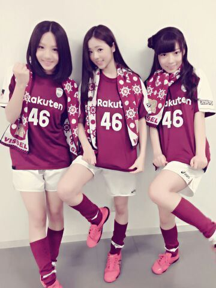
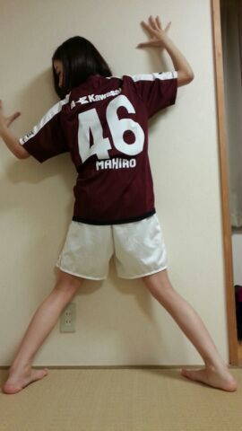
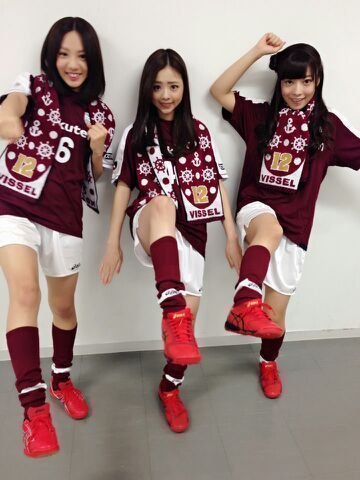

皆さん こんばむわ〜 \(=´∇｀\=)
‥BIG NEWSやね。
野球、野球、野球 ！
東北楽天ゴールデンイーグルス初優勝☆
本ッ当に 、おめでとうございます！！
TVを付ける度に
田中将大投手が映っていてチーム全員が一丸となって頑張っている姿は 本当に素敵です！かっこいいです！
星野監督も毎日TVで見ます^^
たくさんの東北の方の応援も
本当に支えになったんだと思います^^
おめでとうございます
そして 私達 ３人は昨日 日曜日
J1昇格がかかった大事な試合
ヴィッセル神戸VS．京都サンガF.C. に
呼んでいただきました！
すごい人でした！
実は まひろの両親も観に行こうと
思ったらしいんですが、
もういっぱいでチケットが取れないって言っておりました ^^
キラーン☆ ユニフォーム

なんだかもう クリスマスみたい
タオル可愛いね．
そして 始球式蹴らせてもらいました
Rotty、ゴールに シュートしました★
ブハッ!!
壁にベタッ

46の下に「MAHIRO」って
かいてもらいました (> <)
足が 「にゅる」って感じ 笑
試合の結果は 引き分けやったんですが
観客席で応援してて
本当にかっこよかったです！虜になりました☆
だってさあ だってさあ
めっちゃヘディングするんやもん！
めっちゃ走りまわるし 激しいし
ボール蹴ったら 右から左へ 左から左へ
『 どんだけ跳ぶねーーーん 』
って思いました =´ω｀=あは
流石ですな‥ プロとゆう者は。
まひろが相手だったら
ミジンコみたいなもんなんやろなω
ミジンコなめんなよう(*^^*)？いひひ

３人とも ポーズ自由過ぎ 笑
とゆうことで 今日も１日お疲れ様でしたあ(о´∀`о)
ろってぃちゃんは ヘアーをドライしますねこ。
ぢゃあね〜 おやしゅみなしゃ〜い のし